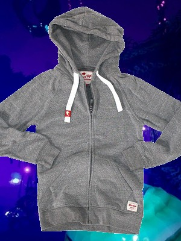

Zip-Up Hoodie
Zip up hoodies are hooded sweatshirts that zip instead of pulling over your head, but zip ups are considered to be a more casual jacket. Hoodies, were first invented in the 1930s as a way to protect laborers who had to work outside in cold temperatures. But because they zip up, they were easier and more practical to wear. In the 1970s, zip up hoodies started to be worn among all people, and like pullovers, they became most popular in the 1990s when casual attire was more fashionable.
A lot of people like to use Zip up's because of how they're easier to put on or off, but I actually like to wear them because you don't have to zip them up to wear them. This allows for different comfortability in varying temperatures, and I'm sure we're all familiar with how consistent temerature in new york is.